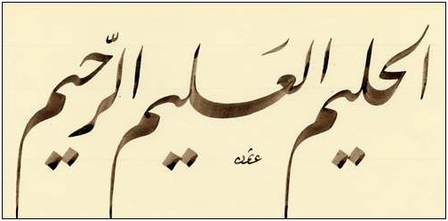

Sırada İlim ve Hilim sıfatları var: 
Kerim Kitabımızda üç âyette bu iki isim yan yana geçiyor. Yukarıdaki hat levhasının aksine, hepsinde önce ilim sonra hilim:
4:12
vallâhu ‘alîmun halîm
22:59
ve-innallâhe le‘alîmun halîm
Şüphesiz Allah en iyi bilir, yumuşak davranır
33:51
vekânallâhu ‘alîmen halîmâ
İlim sıfatlarıyla ilgili üç güzel isim var: ‘âlim -- bilen ‘alîm -- en iyi bilen ‘allâm -- herşeyi bilen Bugün ortadakine baktık, diğer ikisi sonraki güne kalsın.